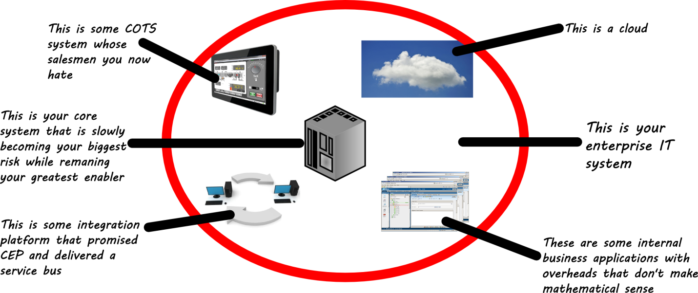
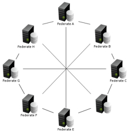
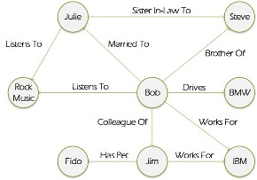
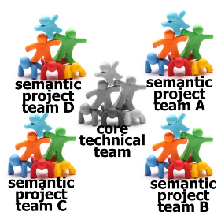

Dear CIO… Regards, Developer.
Only money and poison soothe
Some developers have been in the industry much longer than many CIO’s. They have seen so many enterprise IT systems that you can tell them apart by a certain sad inquisitiveness in their eyes, as if always inquiring whether you might have a stronger poison for them (Well? Do you?). They have implemented so many architectural hacks and cluncky, technical system integrations that they have learnt to regard WSDLSs, bean-mappers and all third party APIs with a visceral, passionate hate (the very same hate that slowly poisons them a little too slowly).
The problem is that your average visceral-hate-filled-developer has no apparent villain to direct his hate towards. The systems he finds himself working on all tend to have been designed by rampaging evolution. These systems generally span the careers of multiple senior architects and/or CIOs. There is no single “bad architect” or “technically deficient CIO” making bad decisions in the background. It just happens that, over time, the culmination of many seemingly rational architectural decisions leads to these behemoth enterprise systems.
Typically in these systems there is a core, mission critical legacy system that no CIO has the courage to decommission. This core is then inevitably surrounded by a cocktail of more modern in-house developed products, integration tools, COTS products and, more recently, clouds that interface with the core in all sorts of fashionable ways.
Personally, if I find my next career move is simply going to be exchanging one such architectural behemoth for another one (probably for more money), my eyes too will glaze over unless someone mentions cyanide.
Recommendations from the coalface
Look. We developers just need CIO’s to get proactive and handle a couple of things on their level that we cannot address on ours. We are saying that if a sufficiently motivated CIO or a sufficiently empowered chief architect can make decisions of the following caliber, then soon we will have a well thought out systems that does not fill senior developers with dread and self-loathing. Then we developers can begin the dirty work of making you shine in the boardroom.
With no further ado, the three principles that we want CIOs and chief architects to enforce are:
1. Homogeneous (normalised) systems architecture
 Each bespoke system architecture added to your system logarithmically increments total risk exposure, overall complexity and overhead. I’ve found that the hassle of documenting, learning and keeping a track of each system’s quirks hardly justifies the value of each system’s specialisations.
Integration often becomes untenable in heterogeneous systems because you suddenly require an expensive specialist technology “surgeon” to “suture” the one system onto the other or to expose it’s guts in some generic manner (making for horrific API’s). Soon business becomes wary of having big ideas because too often IT delivers to slowly and clumsily.
The solution to this is to decide on one enterprise software systems architecture (perhaps JEE, Spring or even a smaller but powerful contender like Apache ISIS) that is flexible enough to handle 95 percent of projected system requirements, then to implement as many systems using this architecture as is possible.
The value here is quickly realised from an infrastructure perspective. A bunch of virtualised “clean slate” servers should be easily provisioned and maintained. True PAAS begins to be a choice for your organisations cost cutting drives.
Soon development too begins to display some RAD qualities as developers find it easier to see the bigger picture and know where to slot in their solutions. After esteemed solutions architects have drawn up a couple of templates for standard use cases (CRUD, reporting, BI) they then go on a permanent unpaid holiday.
And while various “rock-star” developers love working on heterogeneous system architectures, we all know that managing rock-stars is not the business we are in. We are in the business of supporting business. Quickly.
You might wonder if this might not represent its own technology lock-in, which decreases organisational flexibility. To this we say: there are a few frameworks out there that are mature enough to cover all enterprise use-cases and have a good skill base. Invest in these. Perhaps adopt a JSR or have your best developers contribute to their open source development. To counter the risk of lock-in with an albatross technology, play your part in ensuring that these frameworks mature and grow.
That was on the holistic enterprise level. Then there is the question of each subsystem:
2. Better DDD and better APIs
It is difficult to stress this idea any more strongly: we need clearer lines between technically oriented low level developers and business/semantically oriented high level developers.
Too often have I watched technically gifted developers butcher a domain model and semantically oriented developers sidelined as “weak” developers. Even should both skills reside in one developer, that developer ought to separate the two types of work clearly in their own minds and workspaces.
The work of domain modeling is a totally different problem space from the technical one. The skills required to model rich domains resemble more those of a great story teller than those of a mathematician or engineer. One might even say that the goal of rich domain modeling is to produce a “beautiful” domain that has a “graceful” API.
By normalizing the architecture in the previous section you minimize your overall technical debt and provide the clean canvas for semantically oriented developers to create your beautiful domain with its gorgeous APIs. A beautiful domain is almost self evident in structure and lines of responsibility. It has the correct mix of object oriented form & function and aspect oriented functional support. A graceful API feels like a glove, having anticipated its’ client’s every need and placed each in well-named, unambiguous (stateless) functions.
DDD is the medium you use to paint your enterprises semantic landscape, which reflects as closely as possible the language being used by business. DDD should eliminate unnecessary broken telephone translation from requirements code.
Now, with these two pieces of the puzzle in place: the canvas and the medium, you are almost there. The final large hurdle is, of course, the artist:
3. Teams that work
Where is RAD realized? On the architecture? On the IDE? Or perhaps once you’ve successfully modeled your rich domain then RAD should automagically appear? No, sir. That, unfortunately, is wishful thinking. There is no amount of ingenious tooling that can surmount the unmotivated developer.
Real RAD is realized by small, highly motivated and well structured teams.
Having been an active member in a healthy myriad of teams, these are the problems I have seen that need to avoided at all costs:
- Large teams don’t work. They promote bad intra-team communications and lead to people working in silos. A team with more than seven members is already too big.
- Let’s eliminate the functionally specific team (dev teams and QA teams) and move to more project-centric teams. Cross functional, collocated teams beat specialized dispersed teams every day.
- Let’s let the technical guys/projects be technical and the semantic guys/projects be semantic. This blurring of the lines is the cause of many bad codebases. Clearly differentiate the work along these lines.
- Let’s visualize our work. Having a physical board listing tasks and their progress made visible to all promotes transparency and constantly reinforces the context.
- Lets decrease work batch sizes and deliver incrementally. Because when we try to deliver elephants bad things inevitably happen along the way and we cannot change direction in time to avoid collisions.
Essentially we are calling for a bunch of small, Kanban-enabled, cross-functional teams that clearly differentiate between semantic and technical projects. The technical team must ensure that the semantic teams need not worry about such technicalities as security, persistence or how to access third party APIs. Semantic teams should just be writing rich business objects that have rich business behaviour.
We can win all the internets!
With all three of the above in place no CIO could fail to shine in the boardroom unless he or she dresses badly. They would be able to supply business with solutions even before business finishes explaining the problem!
I would love to hear your responses to this, dear CIO, because I have been dying to hear what you think of these things all my career!